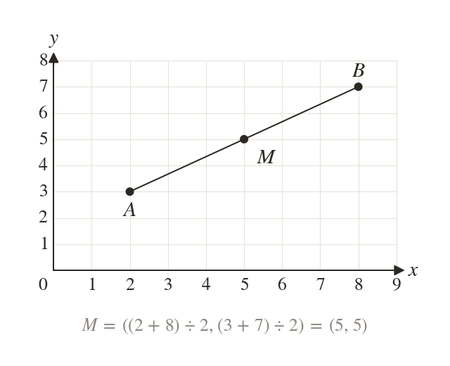
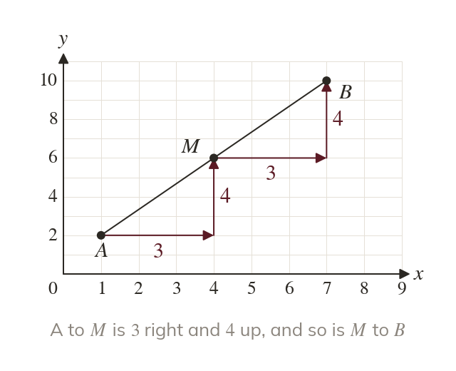
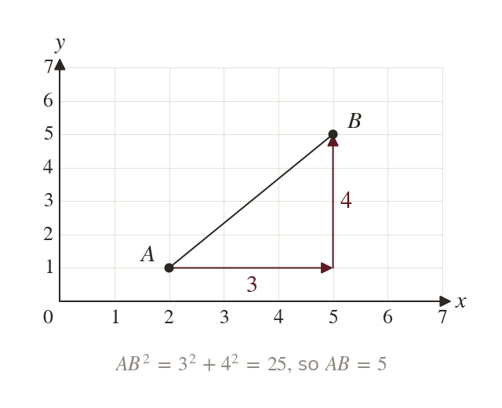
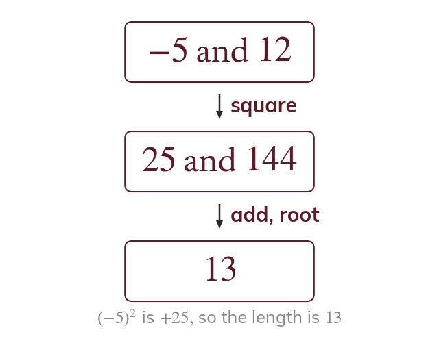

Halfway in each direction
The midpoint is halfway across and halfway up. Its coordinates are the means of the end points' coordinates.
A sat-nav works out how far apart two places are from their coordinates alone. The halfway point and the straight-line distance both come from the change across and the change up.
Work down the page at your own pace. Write every answer in your book first, then click to check it.
Read each card, then follow the worked examples one step at a time.

The midpoint is halfway across and halfway up. Its coordinates are the means of the end points' coordinates.

The midpoint is the same step from each end. So a missing end is that step again, past the midpoint.
Pick an answer. If it's wrong, the feedback tells you which mistake it was.
Read each card, then follow the worked examples one step at a time.

A segment on a grid is the hypotenuse of a right-angled triangle. Its shorter sides are the change across and the change up.

A change can be negative, but its square is positive. So a length is never negative.
Pick an answer. If it's wrong, the feedback tells you which mistake it was.
Finished? Next lesson: 10H.13.2 Rearranging and Reading Straight-Line Equations.
Log in, then search for a code to practise that skill.
Videos, worksheets and more on each part of this lesson.